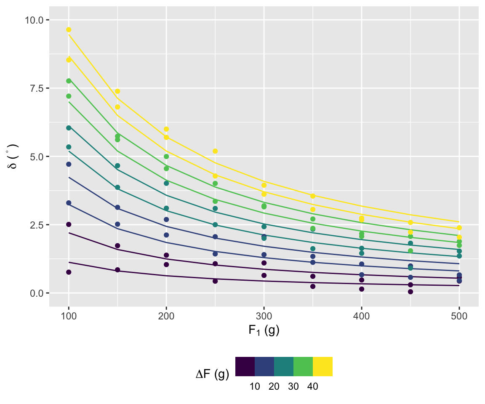
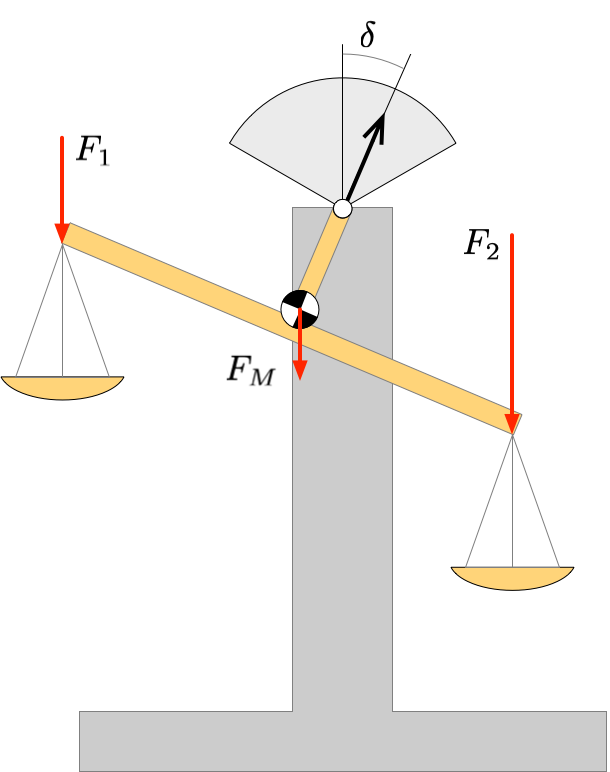
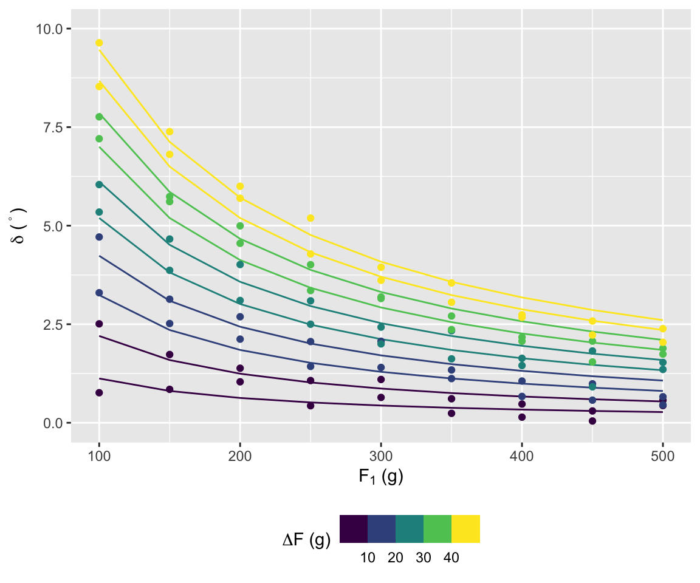
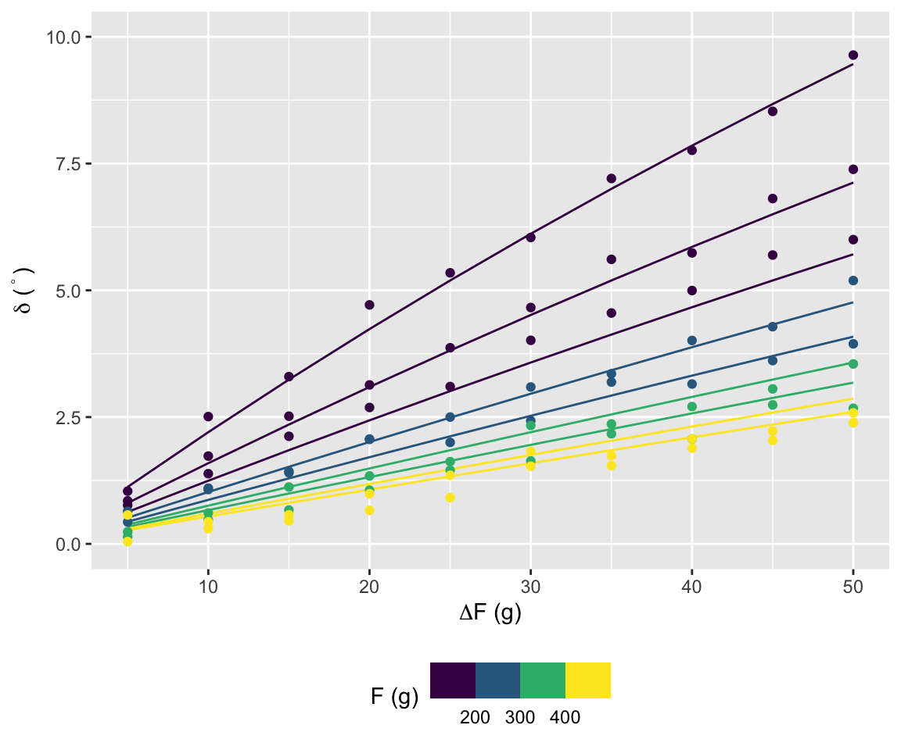
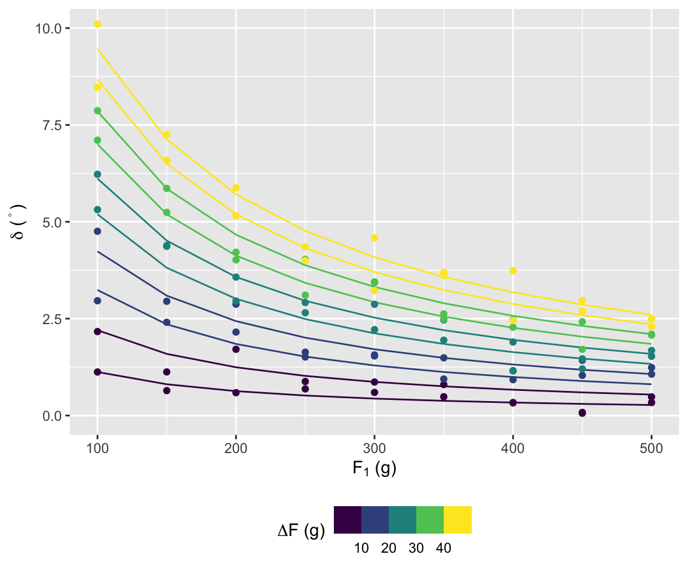
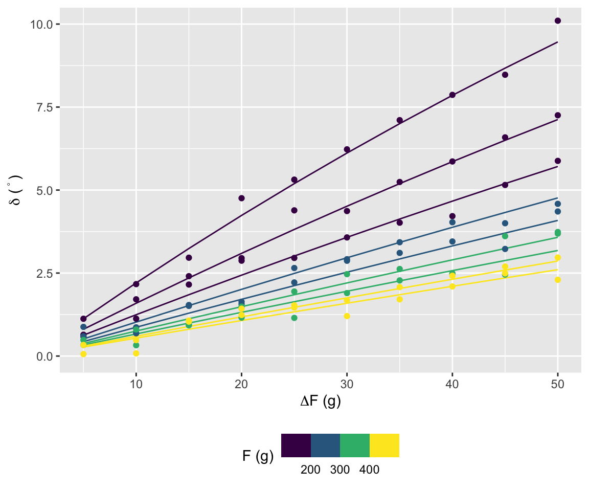
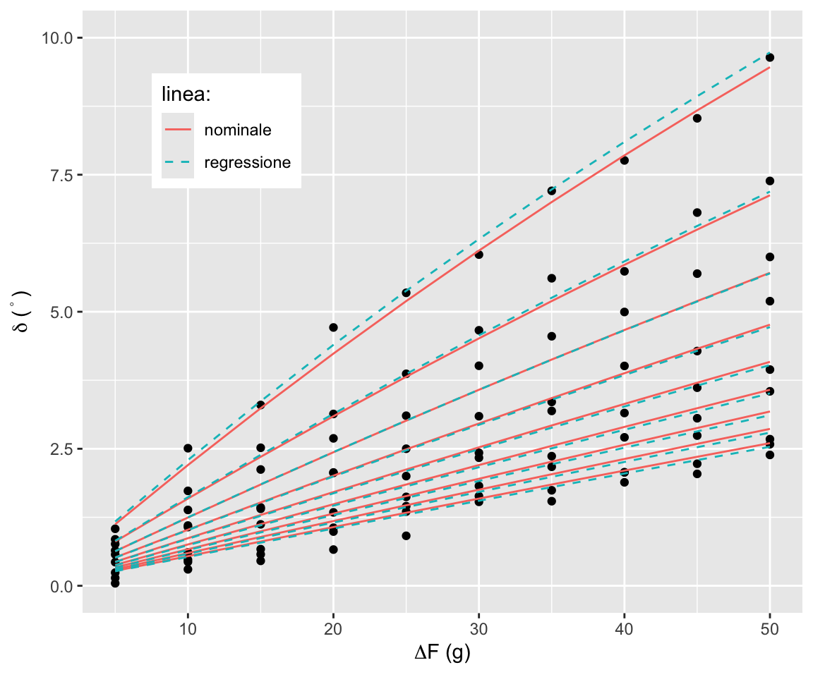
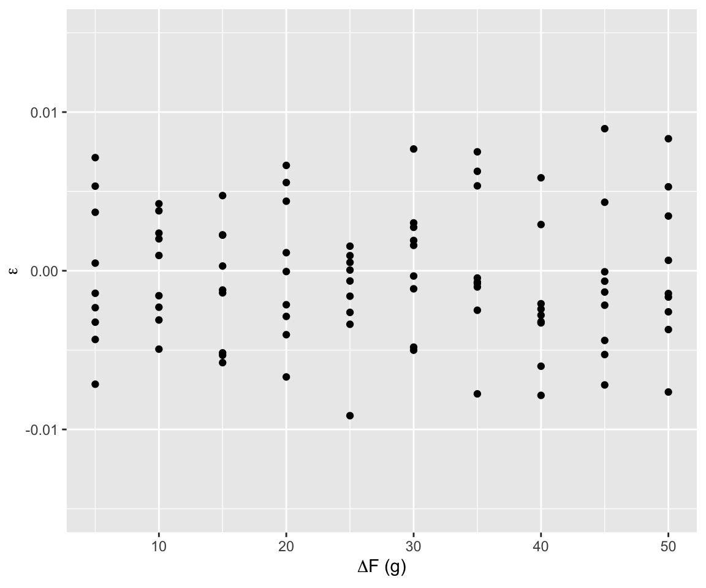
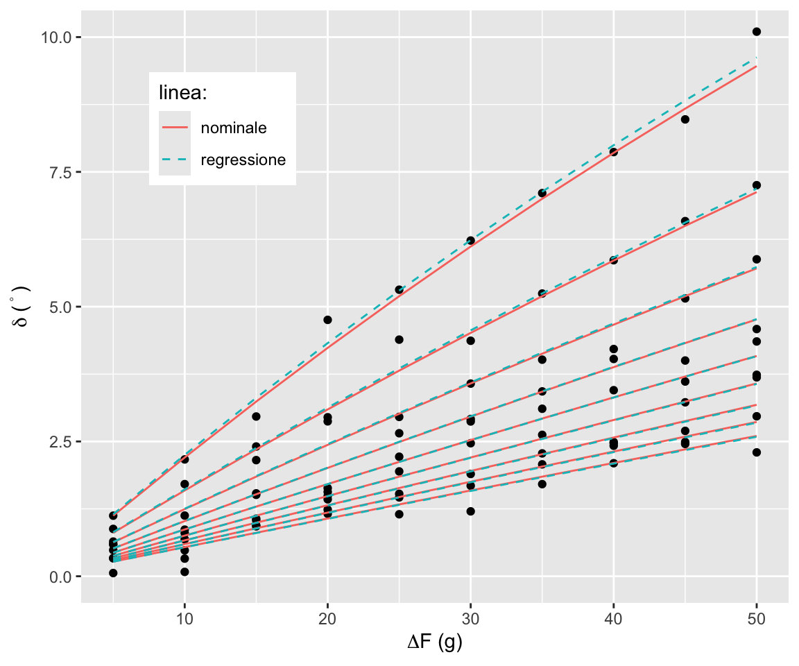
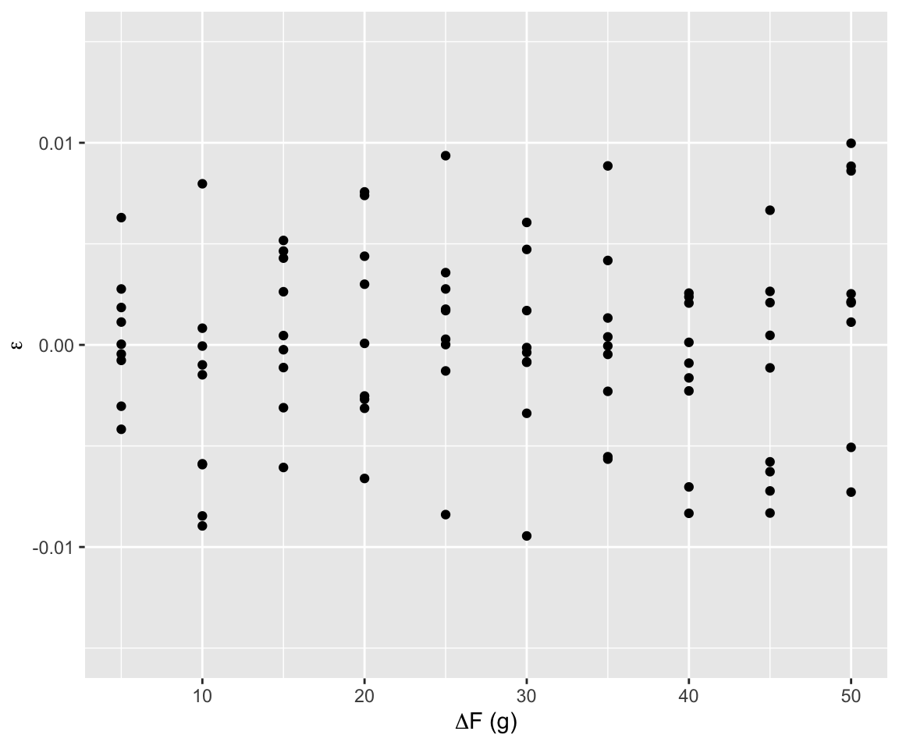

Progetto del corso Analisi Dati e Statistica, A.A. 2025–26
Università di Trento, Dipartimento di Ingegneria Industriale
2025-10-01
Taratura di una bilancia a due piatti, condotta in simulazione.
L’esperimento è individuale.
Consideriamo una bilancia a due piatti come in figura
Il piatto sinistro è caricato con un peso noto \(F_1\) simile alla massa da pesare \(F_2\)
L’angolo dell’ago all’equilibrio \(\delta\) è funzione della differenza tra i pesi
Siano:

Bracci delle forze: \[ \begin{align} b_1 =& \left(\frac{l}{2}+h\tan\delta\right) \\ b_2 =& l\cos\delta-b_1 = \left(\frac{l}{2}-h\tan\delta\right)\cos\delta \\ b_M =& h\tan\delta\cos\delta \end{align} \]
Equilibrio dei momenti: \[ \begin{align} 0 =& F_1b_1 +F_Mb_M - F_2b_2 \\ 0 =& F_1(b_1-b_2) +F_Mb_M -\Delta Fb_2 \\ 0 =& F_1(2h\tan\delta)+F_Mh\tan\delta + \\ & -\Delta F(l/2-h\tan\delta) \end{align} \]
Quindi: \[ \tan\delta = \frac{l}{2h}\frac{\Delta F}{2F_1+F_M+\Delta F} = a\frac{\Delta F}{2F_1+F_M+\Delta F} \]
Raccogliamo l’angolo di equilibrio per carichi sul piatto sinistro pari a \(F_1=100, 150, \dots, 500\) g e sul piatto destro un valore uguale al piatto sinistro più \(\Delta F=5, 10, \dots, 50\) g
In totale effettuiamo 90 prove
Simuliamo la raccolta dati sia in ordine regolare che in ordine casuale
Grafico \(\delta\) vs. \(F_1\)

Grafico \(\delta\) vs. \(\Delta F\)

Grafico \(\delta\) vs. \(F_1\)

Grafico \(\delta\) vs. \(\Delta F\)

Il modello \(\delta = \arctan\left(a\frac{\Delta F}{2F_1+F_M+\Delta F}\right)\) è evidentemente non lineare nei coefficienti \(a\) e \(F_M\). L’arcotangente, inoltre, può creare problemi di convergenza
Si ricorre a una regressione ai minimi quadrati lasciando al primo membro la tangente dell’angolo


Risulta: \(a = 0.9551407\) e \(F_M=28.4649367\), \(R^2=1-\frac{SS_\mathrm{res}}{SS_\mathrm{tot}}=1-\frac{\sum (y_i - \widehat y_i)}{\sum (y_i - \bar y)^2} = 0.9865372\)


Risulta: \(a = 0.9857569\) e \(F_M=40.7223573\), \(R^2=1-\frac{SS_\mathrm{res}}{SS_\mathrm{tot}}=1-\frac{\sum (y_i - \widehat y_i)}{\sum (y_i - \bar y)^2} = 0.9824978\)
Il progetto individuale richiede di eseguire un esperimento di taratura statica dello strumento bilancia a due piatti
.Rmd che descriva tutti i passi e le analisi effettuate e riporti la chiave di verificaecho=TRUE) anche tutti i passaggi in R (inclusa l’analisi dei residui della regressione!), con la possibile eccezione del caricamento delle libreriePer il report usare il template report.Rmd sulla repository GitHub del corso (cliccare qui per scaricare direttamente il file)
Il report richiede la libreria memor: per installarla procedere come segue:
Seguire gli esempi e le indicazioni contenute nel template per l’inserimento di figure e tabelle e per la creazione di riferimenti
paolo.bosetti@unitn.it — https://paolobosetti.quarto.pub/ADAS